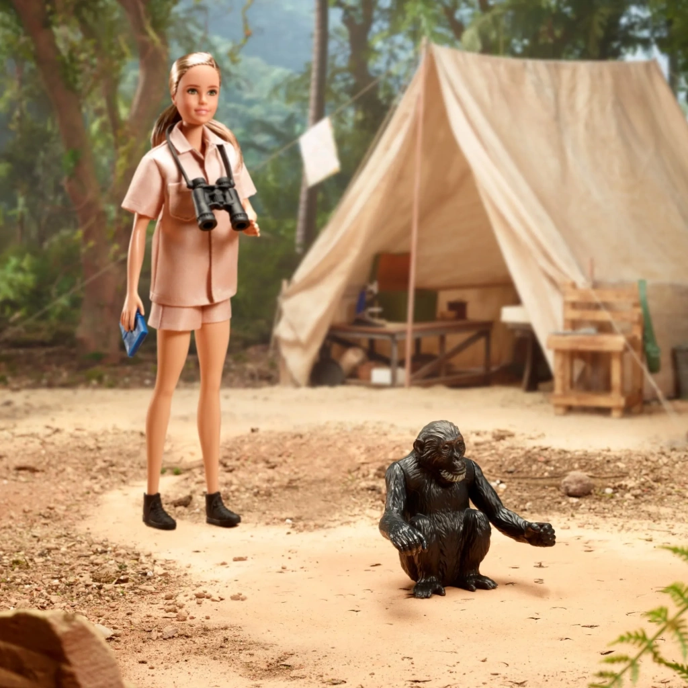
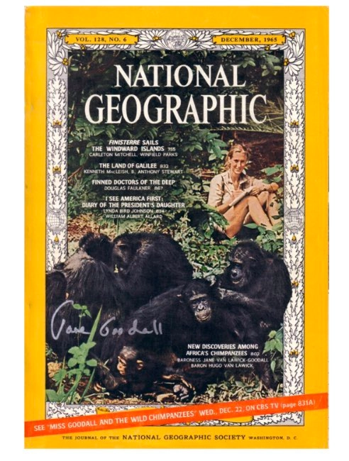
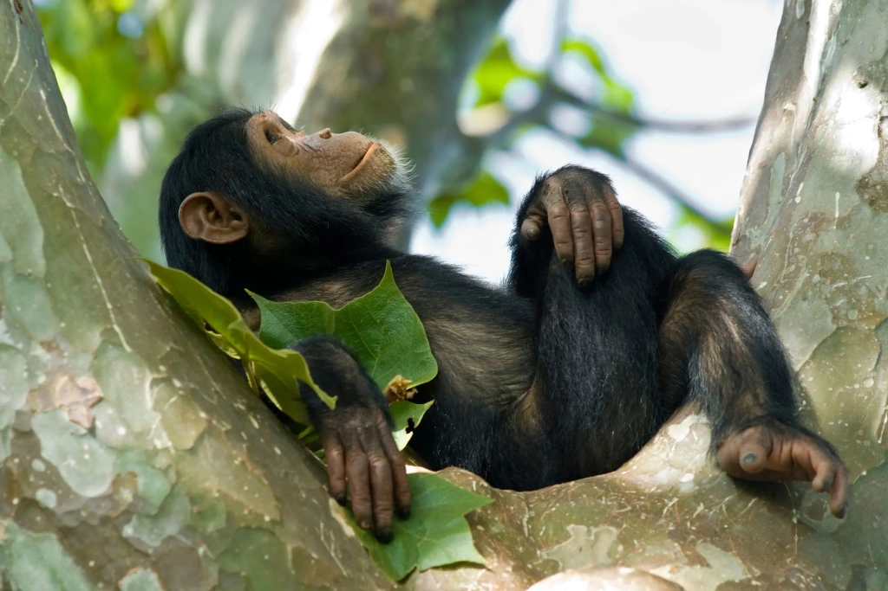
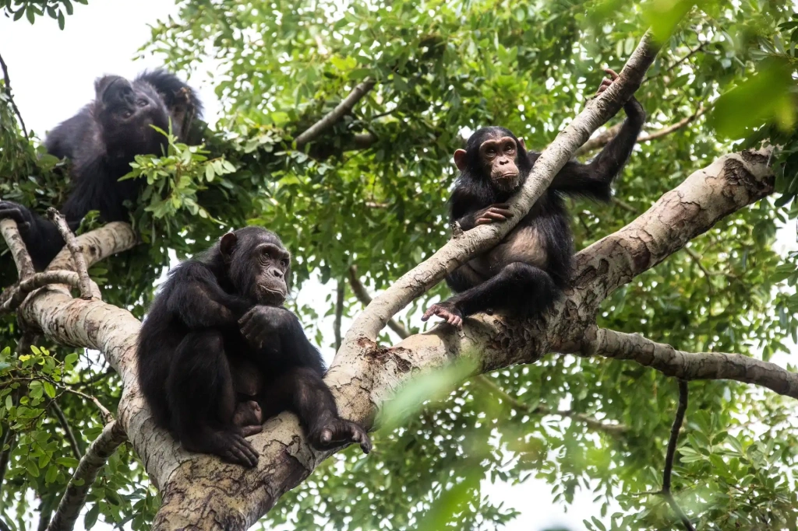
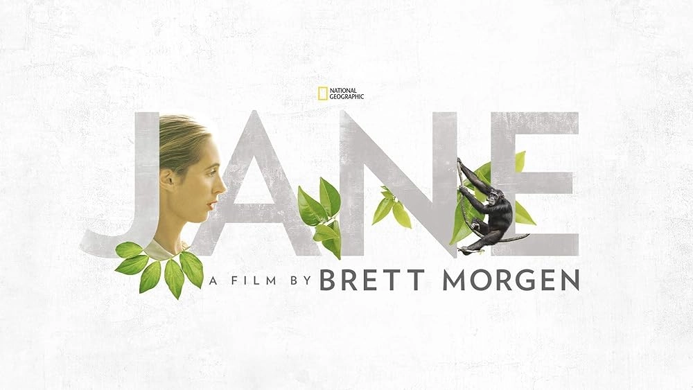
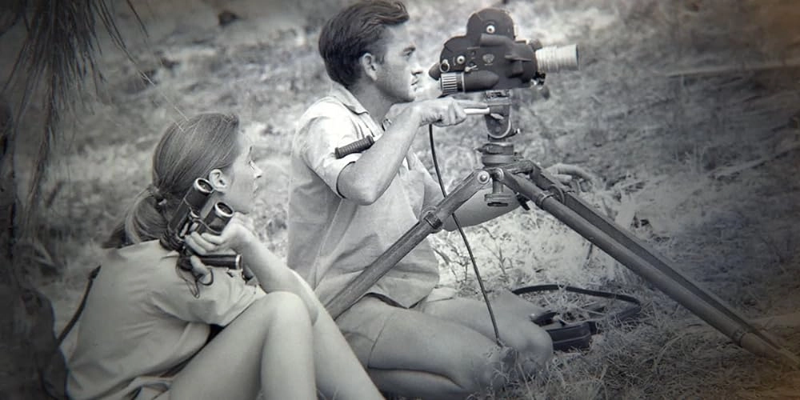
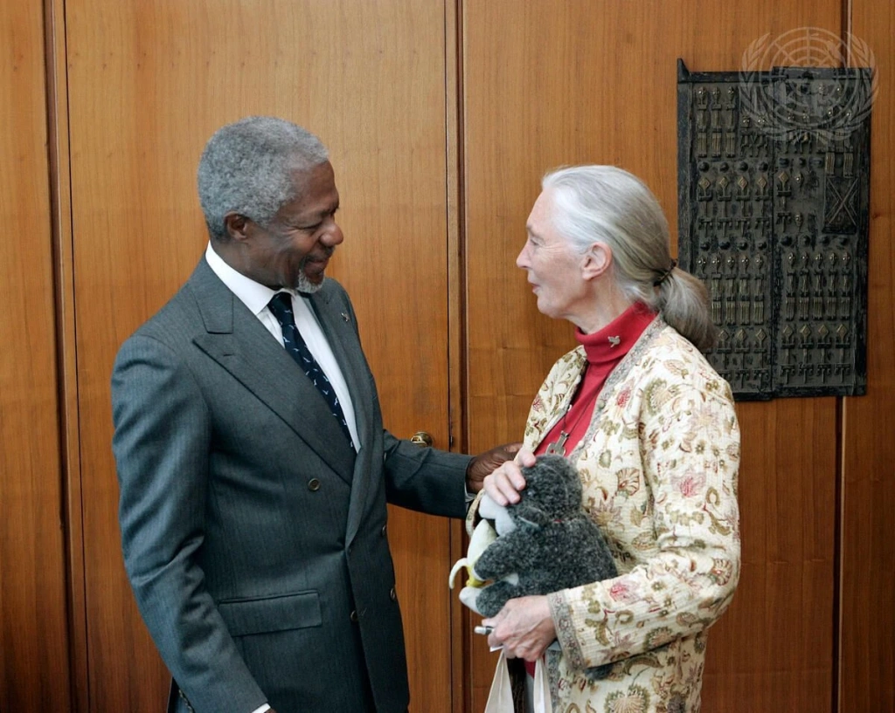
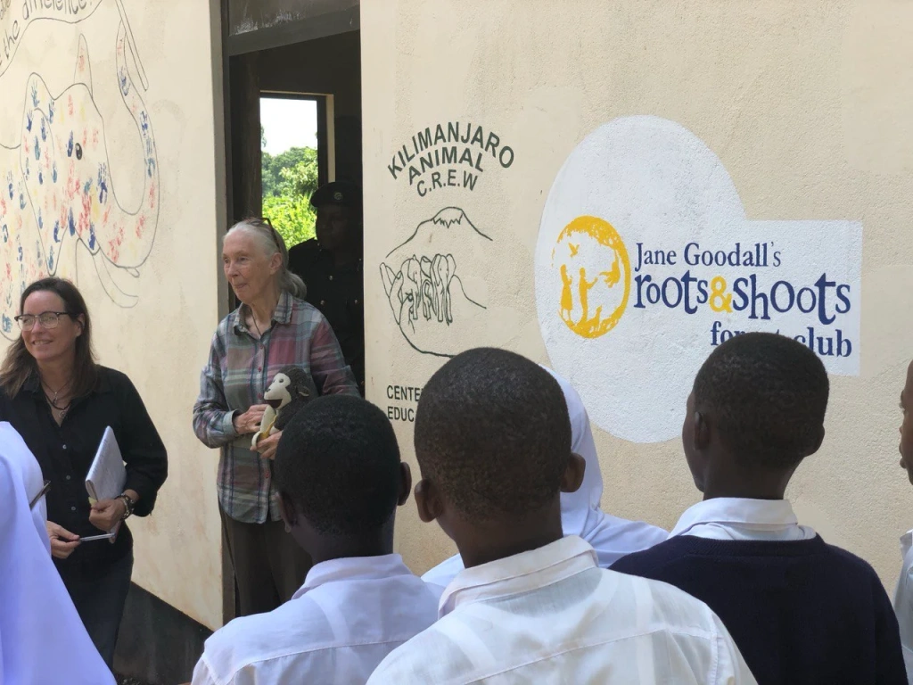
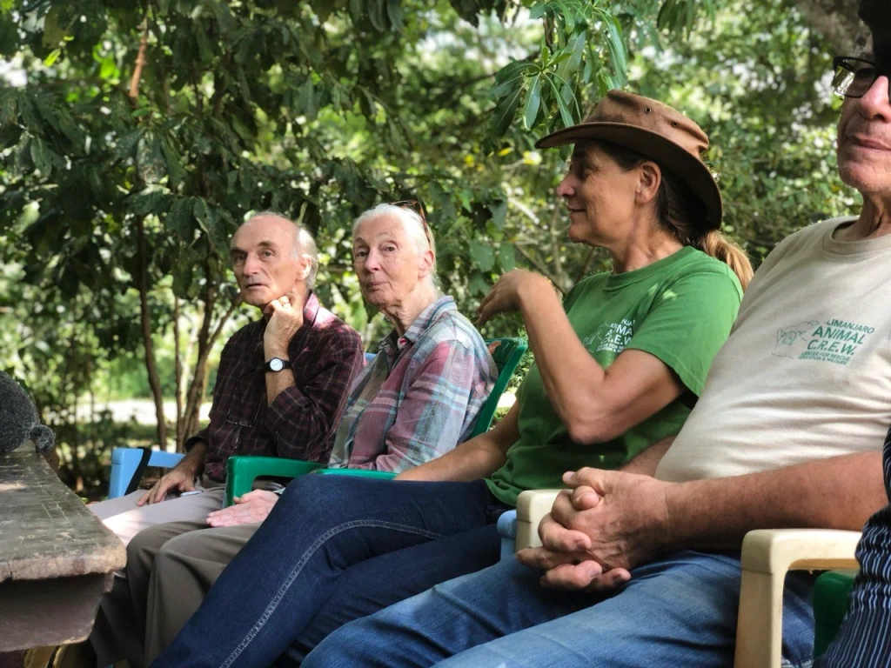
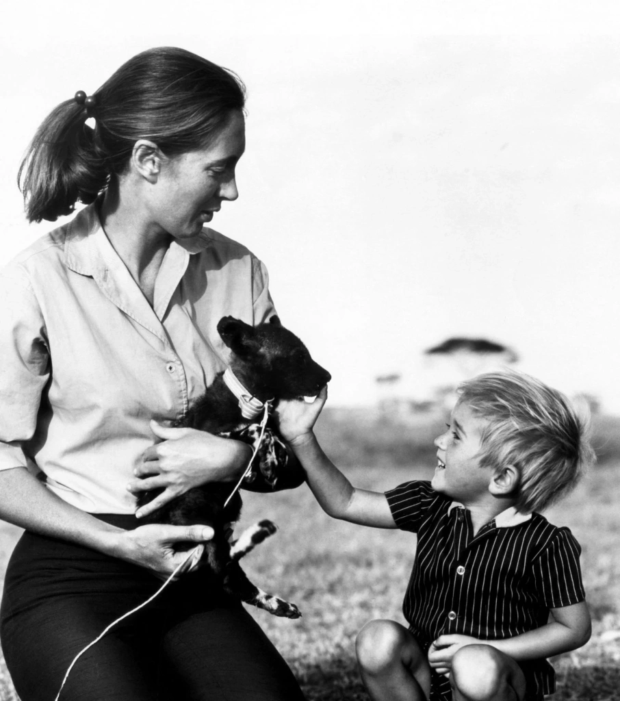

About Tanzania
About Tanzania It’s 1960. Deep within Africa's dense forests by a secluded lake. No people live here; these are wild places suitable only for certain wildlife. A large population of apes lives in these forests. These are chimpanzees, the closest relatives of Homo sapiens. They have been little studied—scientists have only made a couple of short observations of chimpanzees in the wild.
A solitary white girl with a notebook and binoculars sits on a grassy, bush-covered hillside. She is here completely alone. If a leopard or an aggressive group of apes comes out of the forest, no one will come to her aid. Who is she? What is she doing here?

The young woman's name is Jane Goodall, who came from England. Her job is to observe chimpanzees once she finds them. Observe and record all data in her notebooks. The Englishwoman has no special zoological education, she hardly knows anything about chimpanzees or other African animals.
The only educational institution she attended after regular school was not even a college, but a secretarial school where she was taught typing and shorthand skills. But she has an endless love for animals and patience. And from childhood, she had a special dream — to go to Africa and study the world of animals. That turned out to be enough.


Jane Goodall is the world’s leading primatologist and
environmental activist. Her 60-year research legacy laid
the foundation for modern primatology: in Gombe Stream
National Park, she discovered that chimpanzees can form
lasting social bonds and use basic tools. Goodall also
found that, like humans, primates experience emotions
such as joy, fear, empathy, and grief.
Author
of books on wildlife, PhD from Cambridge University,
featured in the National Geographic documentaries, Dame
Commander of the Order of the British Empire, and UN
Messenger of Peace.
What is Jane Goodall famous for?
Dr. Jane Goodall, formerly Baroness Jane van Lawick-Goodall, is an English primatologist and anthropologist. She has been studying chimpanzees for about 60 years and is rightly considered the world-leading expert on them. Her most famous longitudinal observations of these apes were done in Gombe Stream, Tanzania. They changed our understanding of chimpanzee behavior. Today, Jane Goodall is a true icon for conservationists, a star of popular biology, a lecturer who invariably fills auditoriums, and a sought-after guest on television.
Her image has even permeated pop culture: the character of Dr. Goodall has appeared in "The Simpsons". And in a special series of Barbie dolls made from ocean-recovered plastic, there is a Dr. Jane Goodall doll. This doll features her in safari gear, with a binocular and a notebook. It also comes with a model of David Greybeard. He was the chimpanzee who first allowed the young scientist to observe him.

First article and first film
The young woman first became known in 1963 when National Geographic published
her article "My Life Among Wild Chimpanzees."
This was Jane Goodall's first article, in which she provided an interesting
and detailed account of her three-year observations. Among other things, she
noted that chimpanzees find stiff blades of grass, break them off, and stick
them into termite mounds to extract termites, which are considered a
delicacy by the apes. She also asserted that their diet includes meat, for
which these "vegetarians" even hunt. All this was unexpected news to
worldwide.
The article was illustrated with photographs taken by Baron
Hugo van Lawick, whom the magazine had sent specifically to shoot photo and
video materials about the remarkable research on the shores of Lake Tanganyika. In the
photos, readers saw not only the beautiful nature of distant Africa: the
endless expanse of one of the Great African Lakes and hills covered with
dense forests. The photographs also offered a peek into life at the field
camp. Here is the young researcher looking through binoculars while sitting
on a hill, here she is washing her head in a stream, here she starts a
motorboat, and here chimpanzees have come to her tent, and she calmly talks
to them.

People were particularly interested in this aspect of Goodall's work: how a young woman manages alone in the jungle, what kind of shoes she wears while walking through the forest, what she eats, and so on. Jane did not like posing for household photos. She did not want to attract too much attention to herself. She wanted people to think more about the animals and the importance of such field research.
However, the world preferred to see this story as an exotic adventure. Ordinary readers loved the brave British woman with binoculars. Academically educated scientists initially scoffed at her conclusions, saying that a long-legged girl from the cover of National Geographic could not do serious research without the .
In 1965, the documentary "Miss Goodall and the Wild Chimpanzees" was released. It was a huge success, including commercially. This film taught viewers more about the chimpanzees and the young researcher. They also learned about the Tanzanians who helped her with the camp chores. Today, this film seems naive and has inaccuracies, but it was made with a genuine sentiment.
How did Jane Goodall go to Africa?
Subsequently, four dozen documentaries and television programs featuring Jane Goodall were released. She became the world's most popular primatologist. Interviewers and audiences wanted to know every minute detail. In some interviews, Jane's mother participated, who had a significant influence on her in childhood and adolescence. Thus, everyone learned that Jane had a propensity for disappearing for long periods at the farm at just five years old, watching domestic animals. On one occasion, the curious girl was eager to understand where a chicken had an opening through which it could lay a relatively large egg.
Jane had a long-standing connection with chimpanzees — when she was just one year old, her father gave her a stuffed chimpanzee toy. The entire world knows the name of this childhood toy — Jubilee. There's also another stuffed monkey, Mr. H, with a banana in its hands. This one is often carried by Jane Goodall to this day. She has traveled the world with it for decades, symbolizing the indomitability of the human spirit. Ms. Goodall herself enjoys sharing during meetings with fans.

Many fans of the ethologist know what inspired her childhood dreams of Africa. It was a series of books about Doctor Doolittle. Doolittle treats animals and can talk to them in their language. The story about Tarzan — a wild man raised by monkeys, was also impactful. Both characters are connected to Africa and African animals, and both inspired young Jane to dream of a similar fate — to understand animals without fear and live among them in the wilds of Africa. This idea took root when she was just eight years old.
Her dream was fully realized. After many years of field research in Tanzania, Jane Goodall shifted her focus to animal protection, eco-activism, and ecological education for children worldwide. Her personal initiatives in improving the lives of laboratory animals, participation in projects to protect individual populations and ecosystems, the large international "Roots & Shoots" program, and collaboration with the UN, and other organizations — all these became not just a continuation of her famous observations in Gombe but a life's work for Goodall and a realization of her childhood dream.
Dr. Goodall — animal rights advocate and eco-activist
Today, Jane Goodall is known not only as an ethologist but also as a successful environmentalist. This is evidenced by some of her titles and honorary degrees. For example, she was awarded the UN Messenger of Peace, Honorary Advisor to the World Future Council, and Dame Commander of the Order of the British Empire (DBE).
These are not just pretty titles. They reflect Dr. Goodall's everyday work and active involvement in numerous projects and initiatives. Jane Goodall herself states that she travels about 300 days a year, moving from place to place every three weeks to meet with people who are changing life on the planet for the better. She famously said: "The least I can do is speak out for those who cannot speak for themselves."
Three Interesting Facts about Jane Goodall
How many years has Jane Goodall spent with chimpanzees?
Starting in 1960, Jane Goodall's study of chimpanzees in Gombe has continued to this day. Initially, she was the sole field observer. Later, she established a research center in Gombe Stream National Park, which attracted students and volunteers from around the world. Jane herself continued to observe the lives of chimpanzees in the forests by Lake Tanganyika for about 55 years. For the first 15 years, from 1960 to 1975, she was there almost continuously, only leaving for short periods. In later years, other projects, such as the Jane Goodall Institute, the international educational program "Roots & Shoots," numerous lectures worldwide, and supporting conservation projects, began to take more of her time, and her visits to the chimpanzees became less frequent and shorter. However, younger researchers have now taken over this longest-running wildlife study in history.

What has Jane Goodall changed about primatology?
Before Jane Goodall's research in Gombe, it was believed that humans were the only animals capable of creating and using tools. After Goodall sent a report to anthropologist Louis Leakey about chimpanzees using blades of grass as tools to extract termites, Leakey remarked that now either a new definition of man must be conceived, or chimpanzees must be included as humans. Jane Goodall's long-term observations allowed us to understand how very early human societies and their daily lives might have been structured. Some of the most surprising findings from Goodall's observations include:
- Chimpanzees are capable of creating and using tools;
- They are not vegetarians but omnivores;
- Their social behavior is complex.
How old is Jane Goodall, and what is she doing now?
As of 2024, Ms. Goodall has reached the age of 90. At the time this article was written, she continues to be active in advocating for the conservation of nature. Jane Goodall travels globally, engaging with environmental advocates, organizations, and diverse audiences. Her lectures cover a wide range of topics. While she is rightfully considered a leading expert on chimpanzees, her talks also focus on the protection of other animals and broader environmental issues. She is involved in numerous successful projects aimed at conserving the habitats of various species.
Watch a short clip made for Jane Goodall’s 90th birthday in 2024. You'll be amazed by her continued activity, dedicated to protecting the environment and inspiring others.
Main findings from observations of chimpanzees. How Jane Goodall revolutionized primatology
Today, many people know the names of those first chimpanzees who allowed Jane Goodall to observe them. David Greybeard was the first to demonstrate a lack of fear and calmness in front of humans, and many other chimpanzees followed his example. Those who have watched films from Gombe remember Flo and her children: Fifi, Flint, and Figan. Many other apes became remembered too. Mike became famous for scaring other chimpanzees with the noise of empty kerosene cans. Goliath was a large and strong alpha male. Mother and daughter, Passion and Pom, sadly became known for their cannibalism. These and other chimpanzees, whose characters and behaviors Goodall described in her notes, became celebrities in their own right.
Jane named the animals as soon as she could confidently distinguish them from other members of the group. For this, she faced criticism from other ethologists. However, her familiarity with the animals and her sense of connection with them allowed her to stay in the forest by Lake Tanganyika for many years, observing those to whom she had grown attached. She was able to accept chimpanzees as close neighbors, and perhaps even as friends. Ultimately, these observations and descriptions of animal behavior made a significant contribution to our understanding of chimpanzees and of ourselves — about primitive societies and early humans, whose social behavior was just as complex.

Let's summarize the most notable findings that have changed our perception of chimpanzees. In her first year of research, Jane Goodall reported two important observations:
- Chimpanzees are not vegetarians; they eat meat. She observed them consuming the carcass of a bushpig and later hunting a colobus monkey, which was eventually caught and eaten
- Chimpanzees manufacture and use primitive tools — this news forced a redefinition of humans, as the old definition ("Man the Toolmaker") no longer exclusively described Homo sapiens.
Later, the complex social structure of chimpanzee life was described. Due to Jane's kindness and attachment to the apes, it was difficult for her to endure the four-year war between two groups of chimpanzees. During this brutal conflict, one group completely exterminated the males of the other group, picking them off one by one and inflicting fatal wounds. Another harsh observation in the mid-1970s was the realization that cannibalism was not foreign to chimpanzees. The mother and daughter, Passion and Pom, were known to steal other infants and consume them for food.
To balance these unpleasant findings, it should be added that some chimpanzees displayed true altruism, tenderly caring for other orphans. As you can see, the aspects of chimpanzee social life are as complex and multifaceted as those of humans.

Films about Jane Goodall
We won't delve into Jane Goodall's biography and the history of her research in Africa in much detail. There are many interesting interviews and biographical articles written with knowledge and respect. Dr. Goodall has participated in several wonderful documentaries and has written quite a few books herself. Among the vast array of materials, we especially recommend these films:
- "People of the Forest: The Chimps of Gombe"
- "Jane Goodall: My Life with Chimpanzees"
- "Jane Goodall's Wild Chimpanzees"
- "Jane"
The latest film, "Jane", released in 2017, is particularly interesting as it shows the entire life story of Jane Goodall. The narrative begins when she is chosen for a difficult mission by anthropologist Louis Leakey and ends with the story of creating educational programs for animal protection. The film uses unique footage shot by the famous African documentary filmmaker Hugo van Lawick. Until 2014, these frames were considered lost. For the film "Jane", Ms. Goodall herself gave a detailed interview. Her mother also shared memories of the primatologist's childhood.

It's worth mentioning how Ms. Goodall interprets the word "hope," which means a lot to her. Hope is not a passive wish for improvement but an active participation in change. To better understand the nature of this tireless animal rights advocate and learn more about her activities, you may watch contemporary films featuring her. We especially recommend:
All these films show how researchers from around the world find and apply unconventional but effective solutions to help animals. Goodall herself is confident that, despite global ecological problems, there are several compelling reasons to hope that humans can assist nature. All that's needed is to observe, study, understand issues, and find suitable solutions. Jane Goodall fulfills her main mission — to inspire others to study animals and fight for their survival and well-being.
Books by Jane Goodall
It is interesting to read books that Jane Goodall wrote herself, including those aimed at children. It’s worth reading any you find. Here are the most popular ones:
- "In the Shadow of Man" (1971) — a detailed description of Jane Goodall's life among chimpanzees in the 1960s and 70s;
- "Through a Window: 30 years observing the Gombe chimpanzees" (1990) — one of the most important scientific works ever published, where the author gives an exciting account of 30 years of activity in Gombe Stream;
- Reason for Hope: A Spiritual Journey (1999) — — a deeply personal memoir in which Jane Goodall shares her travels and experiences, all while highlighting a prevailing sense of hope for a brighter future for our planet and its inhabitants; co-authored with Phillip Berman;
- "The Book of Hope: A Survival Guide for Trying Times" (2021) — co-authored with Douglas Abrams, this heartfelt dialogue explores how to maintain hope amidst ecological crises and contribute positively towards a better future for the planet.
Books by Jane Goodall particularly interesting for children:
- "Grub: The Bush Baby" (1972) — co-written with Hugo van Lawick, this heavily illustrated book tells the story from the perspective of Grub, the son of Jane Goodall and Hugo van Lawick, as he grows up in the African forest among wild animals.
- "My Life with the Chimpanzees" (1986) — specially written for children, this book shares Jane's observations of chimpanzees in Africa and how these experiences have shaped her life.
- "The Chimpanzee Family Book" (1989) — well-illustrated with photographs, this book introduces young readers to the family life of apes and explains why humans should protect chimpanzees and other animals. It was awarded by UNICEF as the Best Children's Book of the Year in 1989.
- "Pangolina" (2021) — a fictional story about a pangolin named Pangolina, rescued from animal traffickers by a young girl who learns about endangered species from Pangolina.
Husband Hugo van Lawick and son Grub
By 1962, just two years after she started her observations, the Gombe reserve was visited by wildlife photographer and documentarian Hugo van Lawick. His task was to capture Jane Goodall's work and, importantly, to document the new behaviors in wild chimpanzees that the budding ethologist was reporting in her findings.

National Geographic sent van Lawick to work with Goodall, and his appointment was suggested by Louis Leakey, who oversaw Goodall’s research in Gombe. Louis Leakey, who worked closely with his wife, archaeologist Mary Leakey, had a clever idea. He thought that pairing a young female primatologist (Goodall) with a young male photographer (van Lawick) in the African forest would work quite well. Indeed, their connection went beyond that of simple colleagues.
Both shared many common interests: a love for nature and adventure, admiration for animals, and high standards for their work. It was through van Lawick's work that the world came to know about Jane Goodall. It seems, too, that through his lens, the world fell in love with her. In 1964, the couple married, and in 1967, they had a son, Hugo Eric Louis van Lawick, affectionately called Grub, a nickname by which he became known worldwide. Viewers from all around were charmed by chronicles of the little boy growing up in the African jungles, surrounded by chimpanzees and other animals.


Little Grub spent several years living in Gombe by the shores of Lake Tanganyika. His parents specially built a “cage”—a structure that allowed the boy to play outdoors while protecting him from wild animals. As his mother had discovered a few years earlier, chimpanzees liked meat, and there were several dangerous situations when chimpanzees approached the camp and showed aggression towards the human child. Hugo van Lawick reported that he noticed clear signs of the apes’ readiness to attack his son. There was even an attempt to do so, but fortunately, the father was nearby and protected his child. In general, the cage was much safer when the parents left the camp for the whole day to continue their fieldwork. Someone from the assistants always stayed with the child.
How Jane Goodall's family life evolved afterward
In 1974, National Geographic decided that enough footage had been shot in Gombe and did not renew Hugo van Lawick’s contract. The happy family life of the Europeans in the jungle ended. Their patron, Louis Leakey, had already passed away by then. The documentarian van Lawick, who loved filming animals, went to work in the Serengeti National Park to continue his career. Grub lived sometimes with his mother in Gombe, sometimes with his father in the Serengeti, and sometimes in England, where he started school at the age of 6.
That same year, the couple decided to divorce, but Jane Goodall and Hugo van Lawick maintained good relations until the end of his life. Van Lawick spent the next 30 years in the Serengeti, living in a field camp, and leading a team of filmmakers. Indeed, it was in the Serengeti where he was buried after his death in 2002.

It’s noteworthy that Jane Goodall later remarried, but she did not have any more children. She married Derek Bryceson, her second husband in 1975. He was the director of Tanzania's national parks and a member of the country's parliament. He helped Jane Goodall transform the Gombe Stream Game Reserve into a national park.
Jane Goodall Institute
Starting from 1975, Ms. Goodall, by then having earned her Ph.D. from Cambridge University, began to make fewer appearances at Gombe Stream. She increasingly shifted her focus towards education and the conservation of chimpanzees. For this purpose, an organization was needed that could create projects for the protection of their habitats and expand research on animals. In 1977, she co-founded the Jane Goodall Institute.
The Jane Goodall Institute, with branches in approximately twenty countries, is dedicated to several key objectives. These include understanding the needs and characteristics of primates and protecting their habitats from various threats. The Institute also aims to improve the lives of local communities that are involved in conservation projects, ensuring that these efforts support sustainable and environmentally friendly economic opportunities. Additionally, the Institute places a strong emphasis on educating young people about conservation science through various programs, including the global Roots & Shoots initiative, which encourages youth to engage in projects that benefit their communities, wildlife, and the environment.
What does the Jane Goodall Institute do?
Interestingly, the Jane Goodall Institute’s efforts are not limited to helping chimpanzees, mandrills, baboons, and other African primates. In the mid-1980s, when Dr. Goodall began actively attending conferences, she realized that conserving individual primate populations required a comprehensive approach. Having lived in the Tanzanian forest, Jane understood that everything is interconnected. To help the animals, it’s necessary to engage local communities, which includes supporting them as well.

Currently, the Institute has several projects aimed at educating residents of villages in Tanzania, Uganda, and other countries. Besides environmental education, which frankly isn’t a priority for many impoverished Africans populations, educational projects are implemented to improve the quality of life, particularly for girls and women. The nature of life in East African countries means that women bear the brunt of daily responsibilities, so their quality of life is often critically low.
In recent years, the Jane Goodall Institute has been exploring new directions in addition to protecting primates. For example, in 2022, a Committee on Cetaceans was established. Its area of interest is improving the lives of orcas, dolphins, and other cetaceans that are kept in captivity.
Jane Goodall's Roots & Shoots Program
In 1991, the Jane Goodall Institute launched the “Roots & Shoots” program, a training initiative for compassionate young people. It started with discussions between Jane Goodall and young Tanzanians about how to improve the world by helping animals and protecting nature. It quickly became clear that the knowledge accumulated from years of observations in Gombe needed to be passed on to the next generations. Together with young activists, it's possible to find solutions to complex environmental issues.
Jane was amazed when teenagers came to the back porch of her house to talk to her about that concerned them. They felt a responsibility for what was happening around them and were determined to take action. Today, “Roots & Shoots” is a global educational network operating in 60 countries. It involves children and teenagers who care about environmental conservation and are ready to take action to protect nature where they live.

Main objectives of the 'Roots & Shoots' project are:
- Local environmental initiatives
- Studying biological species to protect their habitats
- Humanitarian initiatives aimed at improving the lives of communities
The project involves schoolchildren and students, with the program divided into three levels corresponding to elementary, middle, and high school.
An example of the program's work can be seen in our collaboration with Jane Goodall. In 2020, Angelino Adventures invited her to the village of Machame in the Kilimanjaro region, where an educational center for children was already operational. Ms. Goodall came to the children, helped reorganize the curriculum to meet the standards of “Roots & Shoots,” and interacted with the kids.


Interestingly, among the 12 people who were at the inception of "Roots & Shoots," one later became the head of the Tanzanian branch of this international program, and another became the Minister of Environment for Tanzania.
FAQs about Jane Goodall
What is Jane Goodall most famous for?
Dr. Valerie Jane Morris-Goodall, best known as Jane Goodall, gained fame for her decades-long study of wild chimpanzees in what is now Gombe Stream National Park in Tanzania. Additionally, she is known as a respected scientist, activist, and environmental advocate.
Did Jane Goodall go to Africa alone?
For her first trip to Gombe at the age of 26, Jane Goodall traveled with her mother — an author named Vanne Morris-Goodall. This was a decision by the reserve's administration — they did not want to let the young researcher go into the forest alone. Along with the two women, a local resident also permanently joined them in the camp, serving as a cook and helping with domestic tasks. Initially, Jane Goodall made her first day-long trips into the forest accompanied by rangers. Later, as she became more comfortable, she started to venture out for field research on her own. After a few months, her mother returned to England, and from then until 1962, Jane lived in the camp only with assistants, until photographer and videographer Hugo van Lawick arrived, with whom she developed a romantic relationship.
Was there real danger in Gombe for Jane Goodall?
When she first arrived at the Gombe reserve with her mother, both women became seriously ill, showing symptoms of malaria. The research could have ended at its very beginning, but they overcame the challenges and continued setting up the field camp. Later, as Jane herself recounted, she felt several times that a leopard was watching her from the tall grass, though wild animals never attacked her. Insects and snakes posed more of a problem. There were also several incidents where her young son, who lived with her in Gombe, was at risk. Some chimpanzees displayed aggression and intentions to attack him.

Why are Jane Goodall's research studies important for history and sciences?
Observations of chimpanzees, our closest relatives, led to revolutionary discoveries. Much more became known not only about chimpanzees themselves but also about how early humans evolved. Additionally, Jane Goodall's international educational program "Roots & Shoots" and her series of books, films, and lectures titled "Hope" have made her a well-known promoter of educational and environmental initiatives. She has contributed to both social and natural sciences.
Who is Jane Goodall's son named after?
Hugo Eric Louis van Lawick was named after his father—Hugo Arndt Rodolf van Lawick, a Dutch wildlife photographer and cinematographer. The name Louis was given to Jane Goodall’s son in honor of Louis Leakey, the Kenyan anthropologist and archaeologist who organized her chimpanzee research in Gombe. Grub is the affectionate family nickname for young Hugo, known to all.

What became of Grub, Jane Goodall’s son?
Little is known about Jane Goodall and Hugo van Lawick's adult son as he preferred to stay out of the public eye. Attention was focused on him following the release of documentaries about Gombe and his parents’ fieldwork, as well as from books that discussed him growing up in the wilds of Africa. Later, as a young man, he appeared in footage from the Serengeti, where he accompanied his father on animal filming expeditions. He never showed significant interest in studying wild animals or conservation issues. Moreover, he had past conflicts with his mother due to her commitment to her work. Hugo Eric Louis van Lawick lives in Dar es Salaam with his wife and three children. He has been known to work in shipbuilding. He retains a dislike and even fear of chimpanzees from his childhood.
What happened to Hugo van Lawick, Jane Goodall's first husband?
After National Geographic decided to stop sponsoring Hugo van Lawick's work as a videographer and photographer in Gombe, he chose to move to the Serengeti to stay close to his family while continuing his career in the wild. However, Jane Goodall and he divorced. In the Serengeti, he remained living in a field camp of cinematographers until 1998, as long as his health allowed him to work. Later, he moved to Dar es Salaam, where he lived with his son and his family. After his death from emphysema at age 65 in 2002, Hugo van Lawick was buried in Ndutu (Serengeti), at the very spot where his tent had stood. He maintained good relations with Jane Goodall and his son until his last days.
When and why did Jane Goodall become an eco-activist?
In 1986, Dr. Jane Goodall attended the "Understanding Chimpanzees" conference in Chicago. This event compelled the scientist to view the conservation of chimpanzee populations from a comprehensive perspective. Following this, Jane Goodall shifted her focus from observations and research to a full-fledged approach to environmental conservation.
 on behalf of the World Wildlife Fund during an international campaign to save Earth's wild primates, 1985. Photo: Bettmann/Getty Images, from the")
Is Jane Goodall vegan?
Since 2015, Jane Goodall has adopted a plant-based diet, becoming a vegan. Prior to that, she followed a vegetarian diet. In 2021, the Jane Goodall Institute released a cookbook with vegan recipes. In it, Jane Goodall discusses how giving up meat can help to avoid environmental damage.
Where is Jane Goodall now?
Ms. Goodall resides in Dar es Salaam. She continues her work in wildlife conservation, frequently appearing on TV. She is still interviewed, delivers lectures worldwide, and talks about zoo- and eco-conservation projects being implemented in various countries. Together with other professionals, she writes and publishes books, hosts a podcast for young eco-activists, and travels around the world for about 300 days a year to spread hope for changes in human relationships with nature.
What's next for Jane Goodall?
Apart from all the amazing environmental projects and initiatives of the Jane Goodall Institute, there is another very anticipated event coming up in 2025. "Dr. Jane's Dream," is set to open on July 14, 2025, in Arusha, Tanzania. Located near Mount Kilimanjaro and famous Tanzanian national parks, this cultural exhibit at the Arusha Cultural Heritage Center will feature interactive displays, including Goodall's research tent and a termite mound that will invite visitors to emulate chimpanzee behavior. It will celebrate Jane Goodall's pioneering research with an immersive experience designed by former Walt Disney Imagineers and African artisans. The project, emphasizing environmental education and conservation, will incorporate local artistry with minimal high-tech elements to engage visitors in Goodall's legacy of empathy towards animals and commitment to sustainability.
All content on Angelino Adventures is created with expert insights and thorough research, in line with our Editorial Policy.


Want to know more about Tanzania adventures?
Get in touch with our team! We've explored all the top destinations across Tanzania. Our Kilimanjaro-based adventure consultants are ready to share tips and help you plan your unforgettable journey.
 Tanzania Safaris
Tanzania Safaris
 Kilimanjaro and other mountains
Kilimanjaro and other mountains
 About Tanzania
About Tanzania
 Tanzania Islands
Tanzania Islands